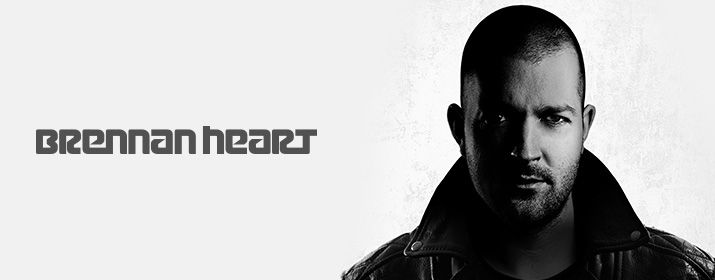

Mainstage: 22:00-23:00!
Fabian Bohn alias Brennan Heart ist ein 31 jähriger DJ und Produzent aus den
Niederlanden. Er ist einer der erfolgreichsten DJ´s der internationalen Hardstyle
Szene.
Brennan Heart experimentierte mit verschiedenen Musikstilen, wie Techno,
Hardtrance, und Techtrance, bevor er sich auf Hardstyle fokussierte und seinen
eigenen universalen Sound entwickelte.
Tracks wie Imaginaryund Lose My Mindbringen seine Handschrift zum Ausdruck:
„Hardstyle machen nicht nur die qualitativen Beats aus, sondern auch die Melodien,
die Songs und die Vocals sind wichtige Elemente der Evolution dieses Genres.“
Lose My Mind - die erste Veröffentlichung seines eigenen Labels Brennan Heart
Music - wurde auf YouTube über 13 Millionen Mal angesehen, was besonders für
einen Hardstyle Track herausragend ist.
2013 veröffentlichte Brennan Heart seine Dokumentation „Evolution of Style – a
journey with Brennan Heart“ – die erste große Dokumentation in diesem Genre.
Brennan Heart ist auf den größten Festivals der Welt vertreten, darunter
Tomorrowland, Decibel, Hardbass, Reverze, Electric Daisy Carnival sowie
Bassleader und Mysteryland.
Unter anderem stammen Hymnen für die Qlimax 2010, Defqon.1 und dem Intents
Festival von Brennan Heart.